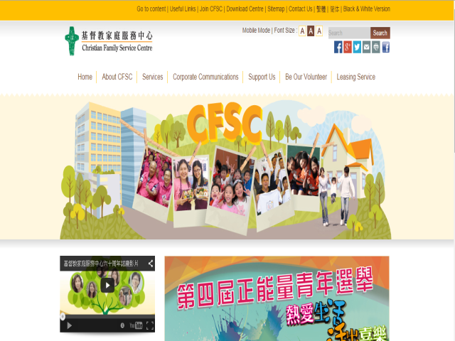

Christian Family Service Center
Aim & Mission
Christian Family Service Centre (CFSC) was established in 1954 by Miss Muriel Boone, a United Presbyterian missionary, to help Mandarin speaking refugees. Material aid, financial support and guidance in finding jobs were provided to needy families. Over the years, the Agency's work gradually extended and it has now developed into a multi-service agency, with the mission to support and enhance family functioning and to foster an environment for growth and change.
Founded to manifest the love of God through serving people in need, with the aim "Person Oriented, Family Centred", Christian Family Service Centre strives to support and enhance family functioning, and foster an environment in which growth and change can take place. In developing services, we hold the following principles: Family First; Professional Service; Excellent Management; and Innovation.
Services & Activities
Services
- Integrated Family Support Services
- Children and Family Services
- Youth Services
- Integrated Elderly Care Services
- Elderly Care Services
- Active Ageing Services
- Integrated Rehabilitation Services
- Services for People with Disabilities
- Opportunities and Inclusion for People with Disabilities
- Mental Health Services
- Medical & Health Services
- Community Development Services
- Environmental Protection & Green Living
- Employee Service Consultancy
- Whole Person Development and Professional Training
Make a Donation (2014)
- Elderly Raffle Ticket 2014
Corporate Events (2014)
- Tong Kee Bao Dim Visited CFSC True Light Villa
- Bunny Mail Service
Job & Volunteering
Job Opportunities
There are several opportunities provided by Christian Family Service Centre. Here are the latest 3 job opportunities shown below. If you would like to know more, please go to this website: http://www.cfsc.org.hk/tc/joinUs
| Date | Position & Job Code |
|---|---|
| 2015-03-20 - 2015-04-03 | Driver and Workmate MD/WM-CE |
| 2015-03-20 - 2015-04-03 | Personal Care Worker PCW-TD |
| 2015-03-20 - 2015-04-03 | Service Assistant SA-TD |
Volunteering
Interested parties which would like to join as CFSC volunteers, please complete the online application form.
CFSC Volunteer Application Form
Contacts
Head Office: Christian Family Service Centre
- Address : 10/F, 3 Tsui Ping Road, Kwun Tong, Kowloon
- Tel : (825) 2861 0283
- Fax : (825) 2520 0438
- Email : enquiry@cfsc.org.hk
- Website : http://www.cfsc.org.hk/
Screen-shot 